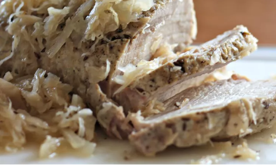

Slow Cooker Lancaster County Pork and Sauerkraut

Description
Ingredients
- 1 (4 pound) pork loin roast
- 1 teaspoon caraway seeds
- 2 cups sauerkraut with liquid
- Salt and pepper to taste
Directions
- Cut pork loin, if necessary, to fit in the slow cooker.
- Season with caraway seeds, and salt and pepper to taste.
- Pour sauerkraut over the roast
- Cook on High for 1 hour, then cook on Low for 5 to 6 hours. Internal temperature of the roast should be at least 145 degrees Fahrenheit.